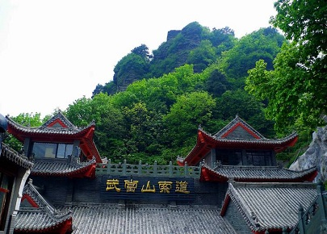
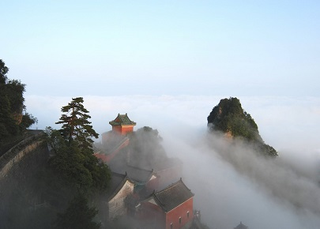

morly旅游网
武当福地天生就，琼阁仙山有美名。雾绕云缠峰翠秀，游人自在画中行。
武当山，中国道教圣地，又名太和山、谢罗山、参上山、仙室山，古有“太岳”、“玄岳”、“大岳”之称。位于湖北西北部十堰市丹江口市境内。东接闻名古城襄阳市，西靠车城十堰市，南望原始森林神农架，北临高峡平湖丹江口水库。明代，武当山被皇帝封为“大岳”、“治世玄岳”，被尊为“皇室家庙”。武当山以“四大名山皆拱揖，五方仙岳共朝宗”的“五岳之冠”地位闻名于世。1994年12月，武当山古建筑群入选《世界遗产名录》，2006年被整体列为“全国重点文物保护单位” 。
武当山周边高峰林立，天柱峰海拔1612米。武当山山体四周低下，中央呈块状突起，多由古生代千枚岩﹑板岩和片岩构成，局部有花岗岩。岩层节理发育，并有沿旧断层线不断上升的迹象，形成许多悬崖峭壁的断层崖地貌。山地两侧多陷落盆地，如房县盆地﹑郧县盆地等。
武当山有七十二峰、三十六岩、二十四涧、十一洞、三潭、九泉、十池、九井、十石、九台等胜景，风景名胜区以天柱峰为中心有上、下十八盘等险道及“七十二峰朝大顶”和“金殿叠影”等。
太和宫
太和宫位于天柱峰南侧，占地面积8万平方米，有古建筑20余栋，建筑面积1600多平方米。整个建筑处于孤峰峻岭之上，殿字楼堂依山傍岩，结构精巧，是武当山的最高胜境，无论是道士还是香客游人，只有登上顶峰，走进太和宫，才是真正意义上的到了武当山。明永乐十年（1412年），明成祖朱棣下令敕建太和宫，建成后嘉封武当山为“大岳太和山”，封这座建在绝顶上的道宫为“大岳太和宫”。
净乐宫
净乐宫位居武当山八宫之首，始建于明代永乐十一年的武当山净乐宫，因1958年兴修丹江口水库时淹没在水库之中，宫中的牌楼、龟驮碑等一批文物搬迁至丹江口。2002年，丹江口市引资7000万元，全面实施净乐宫复原工作，经过2年多的施工，一期工程广场、山门、御碑亭、三大殿及配殿等已初现雏形，再现了当年净乐宫的宏伟气势，成为丹江口南水北调工程地上文物搬迁复原的范例。
 内容整理至网络，如有侵权，请联系我们！1255394075@qq.com